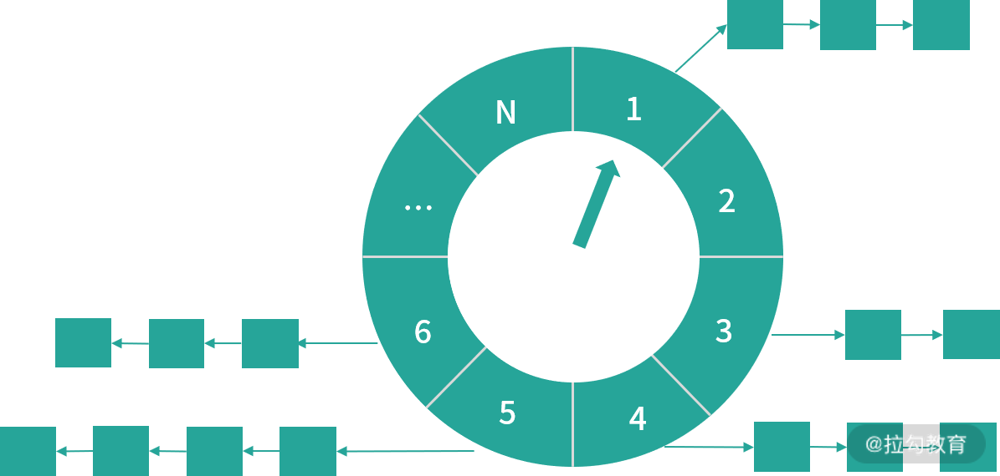

- 00 开篇词 深入掌握 Dubbo 原理与实现，提升你的职场竞争力.md.html
- 01 Dubbo 源码环境搭建：千里之行，始于足下.md.html
- 02 Dubbo 的配置总线：抓住 URL，就理解了半个 Dubbo.md.html
- 03 Dubbo SPI 精析，接口实现两极反转（上）.md.html
- 04 Dubbo SPI 精析，接口实现两极反转（下）.md.html
- 05 海量定时任务，一个时间轮搞定.md.html
- 06 ZooKeeper 与 Curator，求你别用 ZkClient 了（上）.md.html
- 07 ZooKeeper 与 Curator，求你别用 ZkClient 了（下）.md.html
- 08 代理模式与常见实现.md.html
- 09 Netty 入门，用它做网络编程都说好（上）.md.html
- 10 Netty 入门，用它做网络编程都说好（下）.md.html
- 11 简易版 RPC 框架实现（上）.md.html
- 12 简易版 RPC 框架实现（下）.md.html
- 13 本地缓存：降低 ZooKeeper 压力的一个常用手段.md.html
- 14 重试机制是网络操作的基本保证.md.html
- 15 ZooKeeper 注册中心实现，官方推荐注册中心实践.md.html
- 16 Dubbo Serialize 层：多种序列化算法，总有一款适合你.md.html
- 17 Dubbo Remoting 层核心接口分析：这居然是一套兼容所有 NIO 框架的设计？.md.html
- 18 Buffer 缓冲区：我们不生产数据，我们只是数据的搬运工.md.html
- 19 Transporter 层核心实现：编解码与线程模型一文打尽（上）.md.html
- 20 Transporter 层核心实现：编解码与线程模型一文打尽（下）.md.html
- 21 Exchange 层剖析：彻底搞懂 Request-Response 模型（上）.md.html
- 22 Exchange 层剖析：彻底搞懂 Request-Response 模型（下）.md.html
- 23 核心接口介绍，RPC 层骨架梳理.md.html
- 24 从 Protocol 起手，看服务暴露和服务引用的全流程（上）.md.html
- 25 从 Protocol 起手，看服务暴露和服务引用的全流程（下）.md.html
- 26 加餐：直击 Dubbo “心脏”，带你一起探秘 Invoker（上）.md.html
- 27 加餐：直击 Dubbo “心脏”，带你一起探秘 Invoker（下）.md.html
- 28 复杂问题简单化，代理帮你隐藏了多少底层细节？.md.html
- 29 加餐：HTTP 协议 + JSON-RPC，Dubbo 跨语言就是如此简单.md.html
- 30 Filter 接口，扩展 Dubbo 框架的常用手段指北.md.html
- 31 加餐：深潜 Directory 实现，探秘服务目录玄机.md.html
- 32 路由机制：请求到底怎么走，它说了算（上）.md.html
- 33 路由机制：请求到底怎么走，它说了算（下）.md.html
- 34 加餐：初探 Dubbo 动态配置的那些事儿.md.html
- 35 负载均衡：公平公正物尽其用的负载均衡策略，这里都有（上）.md.html
- 36 负载均衡：公平公正物尽其用的负载均衡策略，这里都有（下）.md.html
- 37 集群容错：一个好汉三个帮（上）.md.html
- 38 集群容错：一个好汉三个帮（下）.md.html
- 39 加餐：多个返回值不用怕，Merger 合并器来帮忙.md.html
- 40 加餐：模拟远程调用，Mock 机制帮你搞定.md.html
- 41 加餐：一键通关服务发布全流程.md.html
- 42 加餐：服务引用流程全解析.md.html
- 43 服务自省设计方案：新版本新方案.md.html
- 44 元数据方案深度剖析，如何避免注册中心数据量膨胀？.md.html
- 45 加餐：深入服务自省方案中的服务发布订阅（上）.md.html
- 46 加餐：深入服务自省方案中的服务发布订阅（下）.md.html
- 47 配置中心设计与实现：集中化配置 and 本地化配置，我都要（上）.md.html
- 48 配置中心设计与实现：集中化配置 and 本地化配置，我都要（下）.md.html
- 49 结束语 认真学习，缩小差距.md.html
- 捐赠
05 海量定时任务，一个时间轮搞定
在很多开源框架中，都需要定时任务的管理功能，例如 ZooKeeper、Netty、Quartz、Kafka 以及 Linux 操作系统。
JDK 提供的 java.util.Timer 和 DelayedQueue 等工具类，可以帮助我们实现简单的定时任务管理，其底层实现使用的是堆这种数据结构，存取操作的复杂度都是 O(nlog(n))，无法支持大量的定时任务。在定时任务量比较大、性能要求比较高的场景中，为了将定时任务的存取操作以及取消操作的时间复杂度降为 O(1)，一般会使用时间轮的方式。
时间轮是一种高效的、批量管理定时任务的调度模型。时间轮一般会实现成一个环形结构，类似一个时钟，分为很多槽，一个槽代表一个时间间隔，每个槽使用双向链表存储定时任务；指针周期性地跳动，跳动到一个槽位，就执行该槽位的定时任务。

时间轮环形结构示意图
需要注意的是，单层时间轮的容量和精度都是有限的，对于精度要求特别高、时间跨度特别大或是海量定时任务需要调度的场景，通常会使用多级时间轮以及持久化存储与时间轮结合的方案。
那在 Dubbo 中，时间轮的具体实现方式是怎样的呢？本课时我们就重点探讨下。Dubbo 的时间轮实现位于 dubbo-common 模块的 org.apache.dubbo.common.timer 包中，下面我们就来分析时间轮涉及的核心接口和实现。
核心接口
在 Dubbo 中，所有的定时任务都要继承 TimerTask 接口。TimerTask 接口非常简单，只定义了一个 run() 方法，该方法的入参是一个 Timeout 接口的对象。Timeout 对象与 TimerTask 对象一一对应，两者的关系类似于线程池返回的 Future 对象与提交到线程池中的任务对象之间的关系。通过 Timeout 对象，我们不仅可以查看定时任务的状态，还可以操作定时任务（例如取消关联的定时任务）。Timeout 接口中的方法如下图所示：
 .png
.png
Timer 接口定义了定时器的基本行为，如下图所示，其核心是 newTimeout() 方法：提交一个定时任务（TimerTask）并返回关联的 Timeout 对象，这有点类似于向线程池提交任务的感觉。

HashedWheelTimeout
HashedWheelTimeout 是 Timeout 接口的唯一实现，是 HashedWheelTimer 的内部类。HashedWheelTimeout 扮演了两个角色：
- 第一个，时间轮中双向链表的节点，即定时任务 TimerTask 在 HashedWheelTimer 中的容器。
- 第二个，定时任务 TimerTask 提交到 HashedWheelTimer 之后返回的句柄（Handle），用于在时间轮外部查看和控制定时任务。
HashedWheelTimeout 中的核心字段如下：
- prev、next（HashedWheelTimeout类型），分别对应当前定时任务在链表中的前驱节点和后继节点。
- task（TimerTask类型），指实际被调度的任务。
- deadline（long类型），指定时任务执行的时间。这个时间是在创建 HashedWheelTimeout 时指定的，计算公式是：currentTime（创建 HashedWheelTimeout 的时间） + delay（任务延迟时间） - startTime（HashedWheelTimer 的启动时间），时间单位为纳秒。
- state（volatile int类型），指定时任务当前所处状态，可选的有三个，分别是 INIT（0）、CANCELLED（1）和 EXPIRED（2）。另外，还有一个 STATE_UPDATER 字段（AtomicIntegerFieldUpdater类型）实现 state 状态变更的原子性。
- remainingRounds（long类型），指当前任务剩余的时钟周期数。时间轮所能表示的时间长度是有限的，在任务到期时间与当前时刻的时间差，超过时间轮单圈能表示的时长，就出现了套圈的情况，需要该字段值表示剩余的时钟周期。
HashedWheelTimeout 中的核心方法有：
- isCancelled()、isExpired() 、state() 方法， 主要用于检查当前 HashedWheelTimeout 状态。
- cancel() 方法， 将当前 HashedWheelTimeout 的状态设置为 CANCELLED，并将当前 HashedWheelTimeout 添加到 cancelledTimeouts 队列中等待销毁。
- expire() 方法， 当任务到期时，会调用该方法将当前 HashedWheelTimeout 设置为 EXPIRED 状态，然后调用其中的 TimerTask 的 run() 方法执行定时任务。
- remove() 方法， 将当前 HashedWheelTimeout 从时间轮中删除。
HashedWheelBucket
HashedWheelBucket 是时间轮中的一个槽，时间轮中的槽实际上就是一个用于缓存和管理双向链表的容器，双向链表中的每一个节点就是一个 HashedWheelTimeout 对象，也就关联了一个 TimerTask 定时任务。
HashedWheelBucket 持有双向链表的首尾两个节点，分别是 head 和 tail 两个字段，再加上每个 HashedWheelTimeout 节点均持有前驱和后继的引用，这样就可以正向或是逆向遍历整个双向链表了。
下面我们来看 HashedWheelBucket 中的核心方法。
- addTimeout() 方法：新增 HashedWheelTimeout 到双向链表的尾部。
- pollTimeout() 方法：移除双向链表中的头结点，并将其返回。
- remove() 方法：从双向链表中移除指定的 HashedWheelTimeout 节点。
- clearTimeouts() 方法：循环调用 pollTimeout() 方法处理整个双向链表，并返回所有未超时或者未被取消的任务。
- expireTimeouts() 方法：遍历双向链表中的全部 HashedWheelTimeout 节点。 在处理到期的定时任务时，会通过 remove() 方法取出，并调用其 expire() 方法执行；对于已取消的任务，通过 remove() 方法取出后直接丢弃；对于未到期的任务，会将 remainingRounds 字段（剩余时钟周期数）减一。
HashedWheelTimer
HashedWheelTimer 是 Timer 接口的实现，它通过时间轮算法实现了一个定时器。HashedWheelTimer 会根据当前时间轮指针选定对应的槽（HashedWheelBucket），从双向链表的头部开始迭代，对每个定时任务（HashedWheelTimeout）进行计算，属于当前时钟周期则取出运行，不属于则将其剩余的时钟周期数减一操作。
下面我们来看 HashedWheelTimer 的核心属性。
- workerState（volatile int类型）：时间轮当前所处状态，可选值有 init、started、shutdown。同时，有相应的 AtomicIntegerFieldUpdater 实现 workerState 的原子修改。
- startTime（long类型）：当前时间轮的启动时间，提交到该时间轮的定时任务的 deadline 字段值均以该时间戳为起点进行计算。
- wheel（HashedWheelBucket[]类型）：该数组就是时间轮的环形队列，每一个元素都是一个槽。当指定时间轮槽数为 n 时，实际上会取大于且最靠近 n 的 2 的幂次方值。
- timeouts、cancelledTimeouts（LinkedBlockingQueue类型）：timeouts 队列用于缓冲外部提交时间轮中的定时任务，cancelledTimeouts 队列用于暂存取消的定时任务。HashedWheelTimer 会在处理 HashedWheelBucket 的双向链表之前，先处理这两个队列中的数据。
- tick（long类型）：该字段在 HashedWheelTimer$Worker 中，是时间轮的指针，是一个步长为 1 的单调递增计数器。
- mask（int类型）：掩码， mask = wheel.length - 1，执行 ticks & mask 便能定位到对应的时钟槽。
- ticksDuration（long类型）：时间指针每次加 1 所代表的实际时间，单位为纳秒。
- pendingTimeouts（AtomicLong类型）：当前时间轮剩余的定时任务总数。
- workerThread（Thread类型）：时间轮内部真正执行定时任务的线程。
- worker（Worker类型）：真正执行定时任务的逻辑封装这个 Runnable 对象中。
时间轮对外提供了一个 newTimeout() 接口用于提交定时任务，在定时任务进入到 timeouts 队列之前会先调用 start() 方法启动时间轮，其中会完成下面两个关键步骤：
- 确定时间轮的 startTime 字段；
- 启动 workerThread 线程，开始执行 worker 任务。
之后根据 startTime 计算该定时任务的 deadline 字段，最后才能将定时任务封装成 HashedWheelTimeout 并添加到 timeouts 队列。
下面我们来分析时间轮指针一次转动的全流程。
- 时间轮指针转动，时间轮周期开始。
- 清理用户主动取消的定时任务，这些定时任务在用户取消时，会记录到 cancelledTimeouts 队列中。在每次指针转动的时候，时间轮都会清理该队列。
- 将缓存在 timeouts 队列中的定时任务转移到时间轮中对应的槽中。
- 根据当前指针定位对应槽，处理该槽位的双向链表中的定时任务。
- 检测时间轮的状态。如果时间轮处于运行状态，则循环执行上述步骤，不断执行定时任务。如果时间轮处于停止状态，则执行下面的步骤获取到未被执行的定时任务并加入 unprocessedTimeouts 队列：遍历时间轮中每个槽位，并调用 clearTimeouts() 方法；对 timeouts 队列中未被加入槽中循环调用 poll()。
- 最后再次清理 cancelledTimeouts 队列中用户主动取消的定时任务。
上述核心逻辑在 HashedWheelTimer$Worker.run() 方法中，若你感兴趣的话，可以翻看一下源码进行分析。
Dubbo 中如何使用定时任务
在 Dubbo 中，时间轮并不直接用于周期性操作，而是只向时间轮提交执行单次的定时任务，在上一次任务执行完成的时候，调用 newTimeout() 方法再次提交当前任务，这样就会在下个周期执行该任务。即使在任务执行过程中出现了 GC、I/O 阻塞等情况，导致任务延迟或卡住，也不会有同样的任务源源不断地提交进来，导致任务堆积。
Dubbo 中对时间轮的应用主要体现在如下两个方面：
- 失败重试， 例如，Provider 向注册中心进行注册失败时的重试操作，或是 Consumer 向注册中心订阅时的失败重试等。
- 周期性定时任务， 例如，定期发送心跳请求，请求超时的处理，或是网络连接断开后的重连机制。
总结
本课时我们重点介绍了 Dubbo 中时间轮相关的内容：
- 首先介绍了 JDK 提供的 Timer 定时器以及 DelayedQueue 等工具类的问题，并说明了时间轮的解决方案；
- 然后深入讲解了 Dubbo 对时间轮的抽象，以及具体实现细节；
- 最后还说明了 Dubbo 中时间轮的应用场景，在我们后面介绍 Dubbo 其他模块的时候，你还会看到时间轮的身影。
这里再给你留个课后思考题：如果存在海量定时任务，并且这些任务的开始时间跨度非常长，例如，有的是 1 分钟之后执行，有的是 1 小时之后执行，有的是 1 年之后执行，那你该如何对时间轮进行扩展，处理这些定时任务呢？欢迎你在留言区分享你的想法，期待看到你的答案。
© 2019 - 2023 Liangliang Lee. Powered by gin and hexo-theme-book.